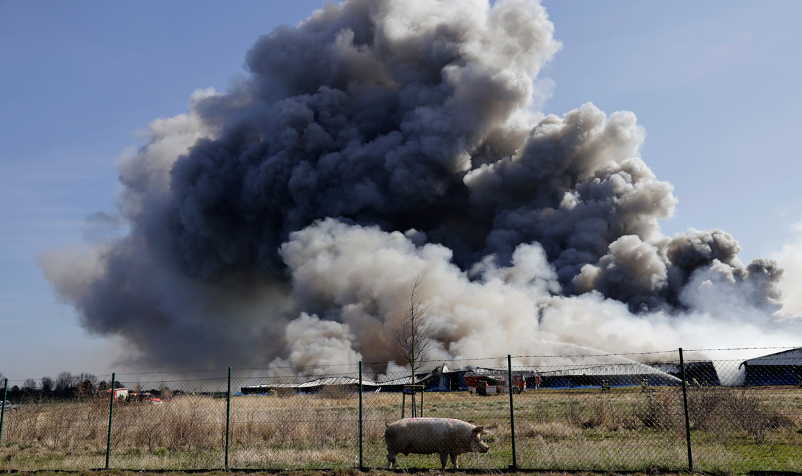

OFFENER BRIEF am Karfreitag 2021 in Gedenken an die Tragödie am Tollensetal

Anlässlich der Katastrophe am Tollensetal mit über 57.000 toten Schweinen
wurde zum Karfreitag ein Offener Brief
an die Ministerpräsidentin des davon betroffenen Landes MV Frau Manuela Schweswig (SPD)
und den Landrat des betroffenen Landkreises Vorpommern-Greifswald Herrn Michael Sack (CDU) verschickt.
In diesem Schreiben werden die beiden Spitzenkandidaten ihrer Parteien aufgefordert,
angesichts der Tragödie ihren Wahlkampf ruhen zu lassen und statt dessen gemeinsam
die im Vorjahr verlängerte tödliche Kastenstandshaltung von Sauen beenden zu helfen.
Eine Petition zu diesem Thema hat inzwischen ca. 1.200 Unterstützer:
Himmelfahrt ohne Auferstehung am Tollensetal
Reaktionen in der betroffenen Gemeinde Alt Tellin auf die Katastrophe können Sie hier ansehen:
Brennende Schweineanlage Alt Tellin–unmissverständliche Warnung an die industrielle Landwirtschaft!
Bitte unterstützt und teilt diesen OFFENEN BRIEF,
damit die Kastenstandshaltung nicht nur am Tollensetal ein Ende findet.
Vielen Dank und trotz alledem Frohe Ostern.